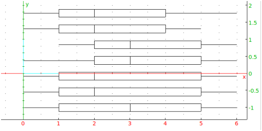

The following functions can find finds statistics for the columns of a
matrix. See also Section 5.42.9 for statistics on
lists and Section 8 for more general statistics.
-
mean(A) computes the arithmetic means of the columns of the
matrix A.
Examples
-
Input:
mean([[3,4,2],[1,2,6]])
Output:
- Input:
mean([[1,0,0],[0,1,0],[0,0,1]])
Output:
- stddev(A computes the standard deviations for the
populations given by the columns of A.
Example
Input:
stddev([[3,4,2],[1,2,6]])
Output:
- stddevp(A) computes the unbiased estimates of
the standard deviations of the populations for the samples given by
the columns of A.
Example
Input:
stddevp([[3,4,2],[1,2,6]])
Output:
- variance(A) computes the variances of the columns of A.
Example
Input:
variance([[3,4,2],[1,2,6]])
Output:
- median(A) computes the medians of the columns of A.
Example
Input:
median([[6,0,1,3,4,2,5],[0,1,3,4,2,5,6],[1,3,4,2,5,6,0], [3,4,2,5,6,0,1],[4,2,5,6,0,1,3],[2,5,6,0,1,3,4]])
Output:
⎡
⎣ | 2.0,2.0,3.0,3.0,2.0,2.0,3.0 | ⎤
⎦ |
- quantile(A,d) computes the deciles of the columns of A,
where d is the decile.
Examples
-
Input:
quantile([[6,0,1,3,4,2,5],[0,1,3,4,2,5,6],[1,3,4,2,5,6,0], [3,4,2,5,6,0,1],[4,2,5,6,0,1,3],[2,5,6,0,1,3,4]],0.25)
Output (the first quartiles of the columns):
⎡
⎣ | 1.0,1.0,2.0,2.0,1.0,1.0,1.0 | ⎤
⎦ |
- Input:
quantile([[6,0,1,3,4,2,5],[0,1,3,4,2,5,6],[1,3,4,2,5,6,0], [3,4,2,5,6,0,1],[4,2,5,6,0,1,3],[2,5,6,0,1,3,4]],0.75)
Output (the third quartiles of the columns):
⎡
⎣ | 4.0,4.0,5.0,5.0,5.0,5.0,5.0 | ⎤
⎦ |
- quartiles(A) returns a matrix where each column
consists of the minimum, the first quartile, the median, the third quartile and
the maximum of the corresponding column of A.
Example
Input:
quartiles([[6,0,1,3,4,2,5],[0,1,3,4,2,5,6],[1,3,4,2,5,6,0], [3,4,2,5,6,0,1], [4,2,5,6,0,1,3], [2,5,6,0,1,3,4]])
Output:
⎡
⎢
⎢
⎢
⎢
⎢
⎣ | | 0.0 | 0.0 | 1.0 | 0.0 | 0.0 | 0.0 | 0.0 |
| 1.0 | 1.0 | 2.0 | 2.0 | 1.0 | 1.0 | 1.0 |
| 2.0 | 2.0 | 3.0 | 3.0 | 2.0 | 2.0 | 3.0 |
| 4.0 | 4.0 | 5.0 | 5.0 | 5.0 | 5.0 | 5.0 |
| 6.0 | 5.0 | 6.0 | 6.0 | 6.0 | 6.0 | 6.0 |
| ⎤
⎥
⎥
⎥
⎥
⎥
⎦ |
The output is a matrix, its first row is the minima of each column,
its second row is the first quartiles of each column,
its third row the medians
of each column, its fourth row the third
quartiles of each column and its last row the maxima of each column:
- boxwhisker(L) draws the whisker box of the statistics series
stored in the columns of A.
Example
Input:
boxwhisker([[6,0,1,3,4,2,5],[0,1,3,4,2,5,6], [1,3,4,2,5,6,0],[3,4,2,5,6,0,1], [4,2,5,6,0,1,3],[2,5,6,0,1,3,4]])
Output:
